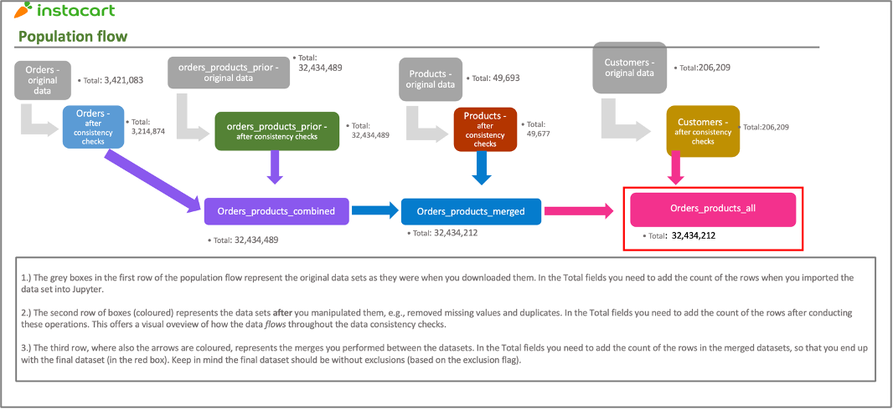

THE MARKETING AND SALES TEAMS REQUIRE INSIGHTS TO STRATEGIZE ON THE CREATION OF A TARGETED MARKETING CAMPAIGN TO DRIVE SALES PRODUCTIVITY.
OBJECTIVE: PERFORM EXPLORATORY ANALYSIS ON INSTACART DATA TO PROVIDE INSIGHTS ON CUSTOMER PREFERENCE RELATING TO PRODUCT PREFERENCES AND SHOPPING HABITS INCLUDING: TIMING, LOYALTY, TARGET PRICEPOINTS OF PRODUCTS PURCHASED, AS WELL AS HOUSEHOLD DEMOGRAPHICS INCLUDING REGIONALITY.

RECOMENDATIONS BASED ON INSIGHTS ARE DELINEATED BELOW BY FUNCTIONAL AREA AS ACTION POINTS FOR A TARGETED MARKETING CAMPAIGN.
CONCLUSION: RECOMENDATIONS ARE LARGELY BASED ON OPPORTUNITES OF UNDERPERFORMING SECTORS AND BETTER UNDERSTANDING OF SHOPPER DEMOGRAPHICS. MOST ACTIONS FALL UNDER A MORE FOCUSED DIGITAL MARKETING EFFORTS.
| FUNCTION | ACTION |
|---|---|
| DIGITAL MARKETING | RUN FLASH SALES TO DRIVE SALES DURING OFF PEAK DAYS MONDAY- THURSDAY AND OFF-PEAK HOURS- AFTER 6 PM AND BEFORE 8 AM. |
| DIGITAL MARKETING | EMAIL CUSTOMERS IN LOYALTY PROGRAMS ADDITIONAL INCENTIVES LIKE FREE SHIPPING, SPECIAL DISCOUNTS TO ORDER OFF PEAK TIMES. |
| DIGITAL MARKETING | RUN DIGITAL ADS ON SPOTIFY, HULU OR OTHER STREAMING MEDIA SERVICES TO DRIVE SALES DURING OFF PEAK HOURS. |
| FUNCTION | ACTION |
|---|---|
| SALES/MERCHANDISING | SINGLE PARENTS ARE A MARKET THAT COULD USE DEVELOPMENT AS A PRODUCT OFFERING AND MAYBE PRICEPOINT OFFERING. |
| SALES/MERCHANDISING | DEVELOP MORE EXTENSIVE ALCOHOL ASSORTMENT AS IS HIGHEST AUR DEPT BUT ONE OF LOWEST ORDER VOLUME DEPTS. |
| SALES/MERCHANDISING | CHECK COMPETITOR ONLINE GROCERY SERVICES IN NORTHEAST TO SEE IF POPULAR BRANDS OR OFFERINGS ARE MISSING FROM INSTACART PLATFORM. |
| FUNCTION | ACTION |
|---|---|
| MARKETING | DEVELOP LOYALTY PROGRAM WITH SPECIAL DISCOUNTS AND FREE SHIPPING TO REWARD LOYAL CUSTOMERS AND INCENT REGULAR CUSTOMERS TO MAKE MORE FREQUENT PURCHASES. |
| DIGITAL MARKETING | RUN DIGITAL ADS ACROSS POPULAR WEBSITES AND STREAMING SERVICES INTRODUCTORY PROMOS TO DRIVE NEW CUSTOMERS. |
| SALES/MERCHANDISING | SIMPLIFY PRICEPOINT INCLUDED IN PROMOS TO BE ABLE TO MESSAGE EASIER. |
| FUNCTION | ACTION |
|---|---|
| DIGITAL MARKETING | TARGET CUSTOMERS IN 18-44 TO DRIVE SALES IN BABY DEPTS, PETS AND HOUSEHOLD SUPPLIES TO PROMOTE LIFESTYLE PURCHASES VIA EMAILS AND TARGETED ADS. |
| DIGITAL MARKETING | TARGET HIGHER INCOME >250K HOUSEHOLDS WITH PREMIUM OR HIGHER PRICEPOINT ASSORTMENTS SINCE THEIR AVG ORDER PRICE IS SIGNIFICANTLY HIGHER. |
| DIGITAL MARKETING | TARGET CUSTOMERS IN THE NORTHEAST BY EMAIL WITH PROMOS AND FREE SHIPPING TO ACQUIRE NEW CUSTOMERS AND INCREASE MARKET SHARE IN THIS REGION. |